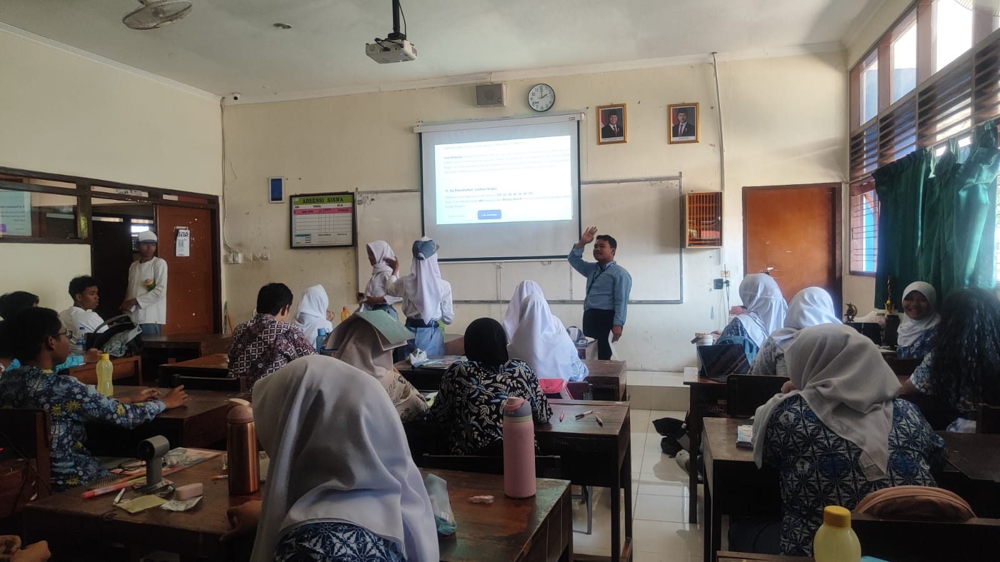
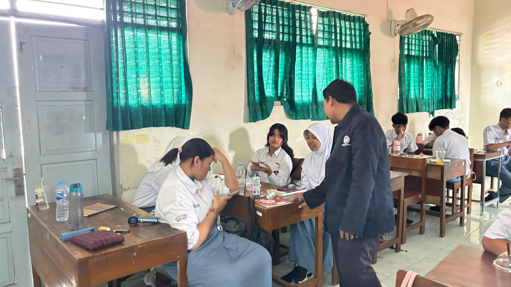
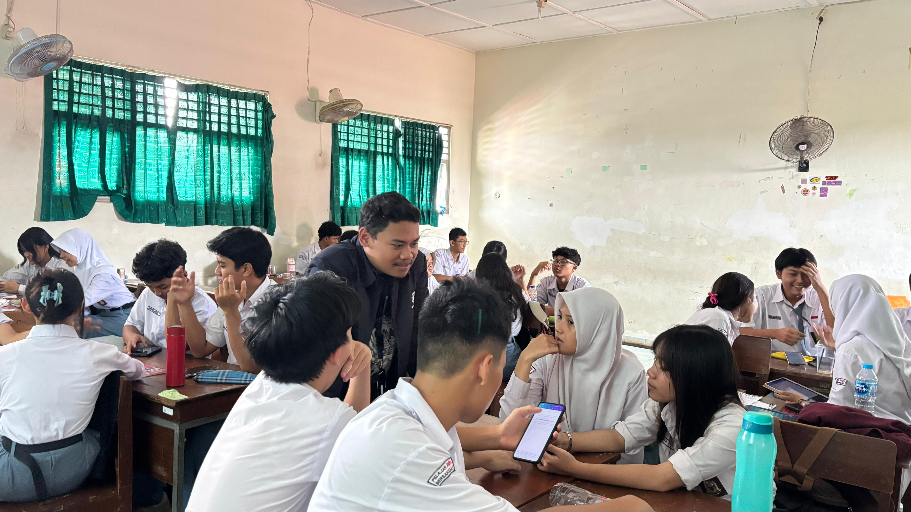

Siklus 1: Struktur Data dan Algoritma Dasar
Perangkat pembelajaran lengkap berbasis Experiential Learning (Siklus Kolb) untuk menanamkan pemahaman struktur data linier (Array, List, Stack, Queue) dan 4 fondasi Berpikir Komputasional (Dekomposisi, Pengenalan Pola, Abstraksi, Algoritma) pada peserta didik Fase E.

Video Praktik Pembelajaran Siklus 1
Dokumentasi audio-visual pelaksanaan pembelajaran terbimbing berdurasi penuh di Ruang Kelas SMAN 4 Yogyakarta:

Praktik Pembelajaran Struktur Data dan Algoritma Dasar di Ruang Kelas
Guru Model: Nur Isnanto Nugroho, S.Pd. • Dosen: Dr. Nuryake Fajaryati, S.Pd.T., M.Pd. • Pamong: Titis Widowati, S.T.
Artefak Pendukung Pembelajaran
Klik tab di bawah untuk melihat rincian dokumen kurikulum dan gunakan tombol View PDF untuk pratinjau langsung:
Modul Ajar Siklus 1: Struktur Data dan Algoritma Dasar
Desain rencana pembelajaran mendalam berbasis Experiential Learning (Siklus Kolb) untuk materi struktur data dan algoritma dasar fase E.
Dokumentasi Kegiatan Siklus 1
Rekaman visual suasana pembelajaran, interaksi peserta didik, dan pendampingan di Ruang Kelas SMAN 4 Yogyakarta:
Apersepsi & Polling Kelas
Guru memandu jajak pendapat logika komputasional Mentimeter di depan ruang kelas.

Kolaborasi & Praktik Siswa
Peserta didik Fase E mempraktikkan konsep struktur data dan fondasi berpikir komputasional di ruang kelas.

Presentasi Solusi Logika
Perwakilan kelompok mempresentasikan rumusan algoritma alur prioritas di hadapan rekan sekelas.

Asesmen Mandiri & Refleksi
Pengerjaan tes formatif berbasis soal tantangan Bebras untuk mengukur ketercapaian nalar kritis.